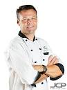

Chef 1: Alejandro Rodriguez:Born and raised in Mexico City, Chef Alejandro Rodriguez infuses his Latin roots into every dish he creates. His passion for traditional Mexican cuisine shines through in his delectable street tacos and rich mole sauces. Chef Rodriguez's culinary journey has taken him from the bustling markets of Mexico to prestigious kitchens around the world. |
Chef 2: Isabella RossiIsabella Rossi is an Italian culinary virtuoso known for her exquisite pasta creations. Hailing from the charming streets of Florence, she brings the authentic taste of Italy to every dish. With over two decades of experience, Chef Rossi has honed her skills in crafting mouthwatering, handmade pasta that transports your taste buds to the heart of Tuscany. |
Chef 3: Marcus WilliamsMarcus Williams, a barbecue pitmaster from Texas, is the master of smoked meats. With a love for slow-cooked, tender barbecue, Chef Williams has spent years perfecting his dry rubs, sauces, and the art of smoking. He's a true grill master, known for his mouthwatering ribs and brisket. |
Chef 4: Wolfgang SchmidtWolfgang Schmidt, a classically trained chef from Germany, is a maestro of fine dining. With a penchant for precision and elegance, Chef Schmidt is renowned for his European haute cuisine. His signature dishes include perfectly seared foie gras, delicate soufflés, and dishes that showcase the artistry of French and German culinary traditions. |
Chef 5: Michael SullivanMichael Sullivan is a native New Yorker who has a flair for combining international flavors into contemporary fusion cuisine. With an extensive background in culinary arts, Chef Sullivan is known for his innovative approach to blending classic techniques with modern trends. His signature dishes, such as miso-glazed salmon with wasabi mashed potatoes, are celebrated for their bold and harmonious flavors. |
Chef 6: Ricardo SanchezRicardo Sanchez, originally from the vibrant streets of Mexico City, is a charismatic chef renowned for his delectable street food creations. Chef Sanchez's journey started with a modest food cart, where he crafted mouthwatering tacos and salsas. Today, his thriving taqueria is celebrated for its authentic Mexican street fare. His secret? He uses only the freshest ingredients and time-honored recipes handed down through generations. Chef Sanchez's culinary expertise brings the spirit of Mexico to every plate. |